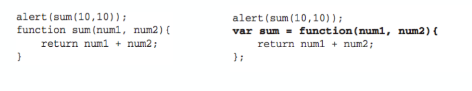
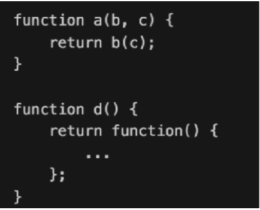
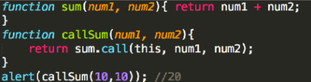
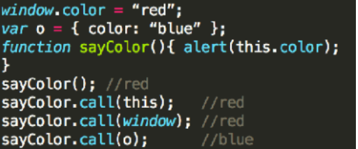
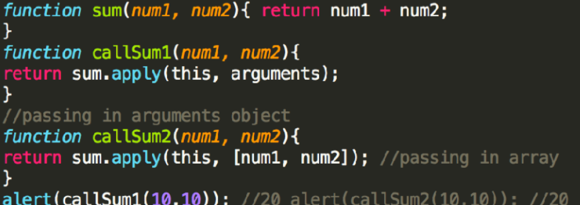
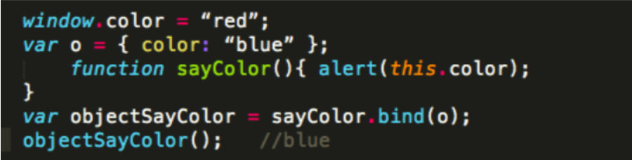

原文出处:本文由博客园博主老衲吃个饭提供。
原文连接:https://www.cnblogs.com/dwvfw855/p/10890813.html
原文连接:https://www.cnblogs.com/dwvfw855/p/10890813.html
Object
引用类型 - Object
{} 等价于 new Object() 我们经常使⽤用对象来承载可选参数，⽽而⽤用 命名的形式参数来传递必要的参数
var c = “c”;
a.c vs a[c]
a.c 等价于 a[‘c’]
我们经常使⽤用对象来承载可选参数，⽽而⽤用 命名的形式参数来传递必要的参数
引用类型 - Array
[] 等价于 new Array()
array.length (not read-only)
检测： instanceof
isArray
Object.prototype.toString.call(array);
array.length (not read-only)
typeof vs instanceof
引用类型 - Date & RegExp
new Date()
引用类型 - Function
函数声明与函数表达式


Function - 函数也是一种值


Function - 函数的内部属性
Function - 函数属性和方法
Function - call & apply





Function - bind


单例内置对象
Global（window）